External and internal modes of sensory processing
3 Questions
- How are unambiguous conscious experiences generated from ambiguous sensory information?
- When and how does perceptual inference give rise to hallucinatory experiences?
- How does perception balance sensitivity to change with stability against noise?
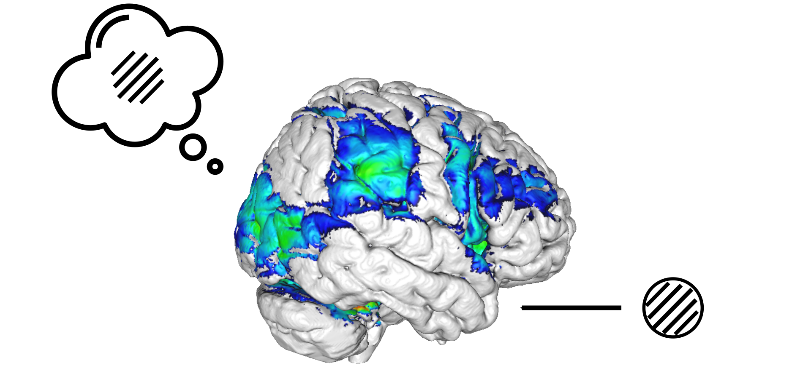
How are unambiguous conscious experiences generated from ambiguous sensory information?Bistable Perception
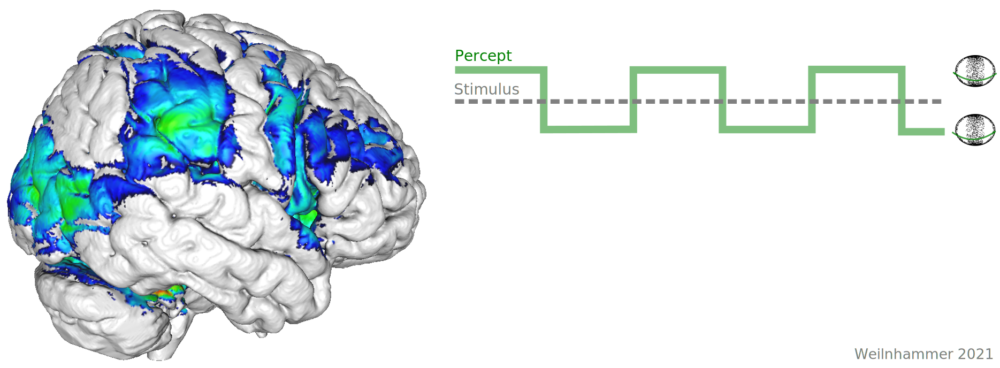
Bistable Perception

Bistable Perception

Bistable Perception
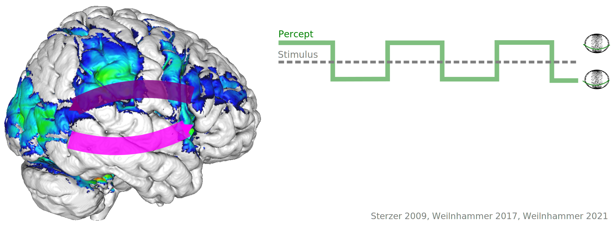
Models of Bistability
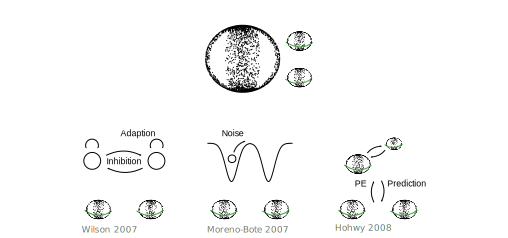
Model-based fMRI

- Prediction errors are encoded in IFC and V5/hMT+.
Model-based fMRI

- Prediction errors are encoded in IFC and V5/hMT+.
Model-based fMRI

- Prediction errors are fed forward from V5/hMT+ to IFC.
Model-based fMRI

- Perceptual content can be decoded from V5/hMT+.
Model-based fMRI

- Prediction errors are generated in suppressed V5/hMT+ voxels.
Feedforward Processing
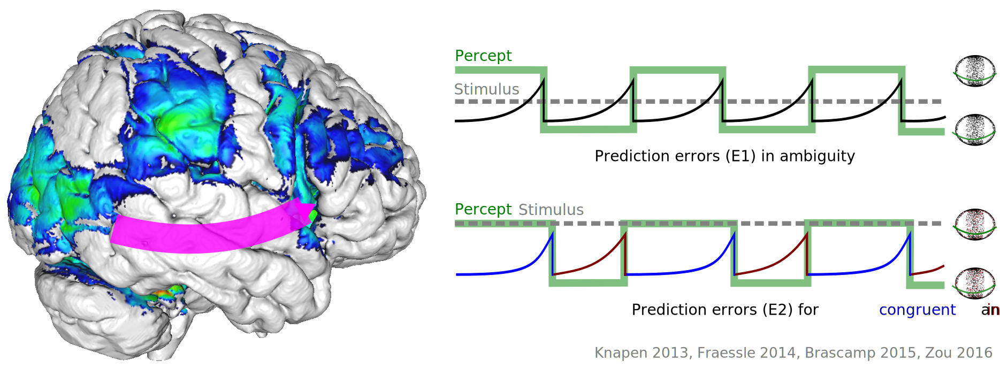
- Suppressed voxels in V5/hMT+ encode perceptual conflict.
- IFC receives feedforward information about perceptual conflict.
Feedback processing

- Is the prefrontal representation of perceptual conflict relevant for conscious experience?
- Causal intervention: theta-burst stimulation in IFC and vertex
TMS
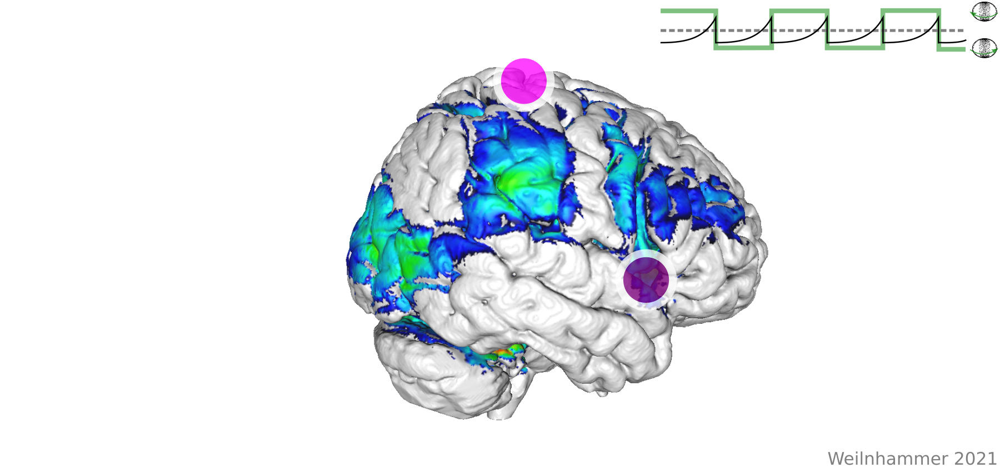
TMS

TMS

TMS

TMS
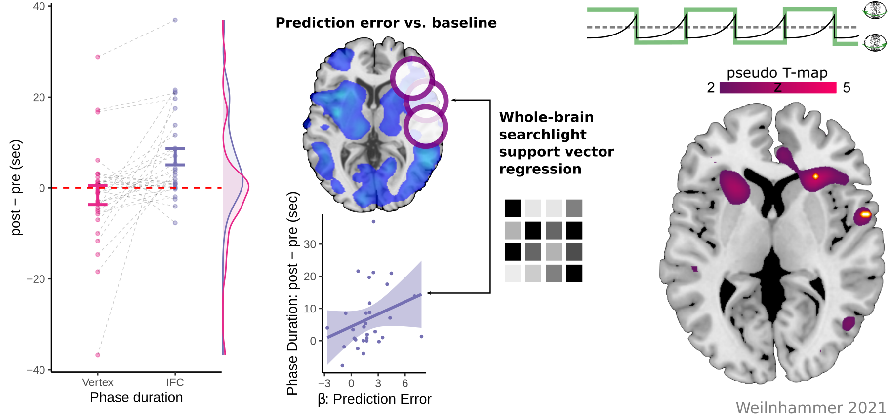
Hybrid model
- IFC detects and resolves perceptual conflict during bistable perception.
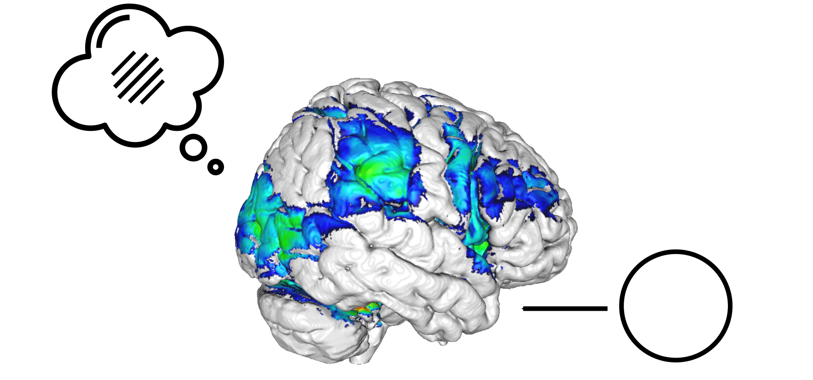
When and how does perceptual inference give rise to hallucinatory experiences?Predictive Coding

Predictive Coding
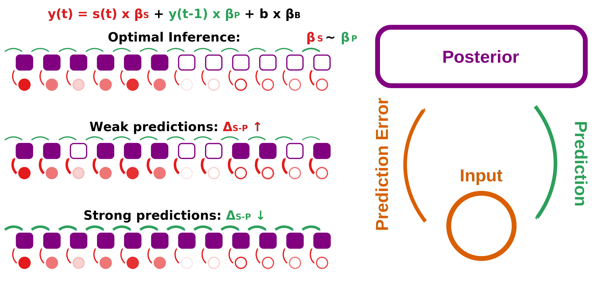
Psychotic symptoms: enhanced predictions or excessive prediction errors?Models of Bistability
Schizophrenia

Enhanced prediction errors
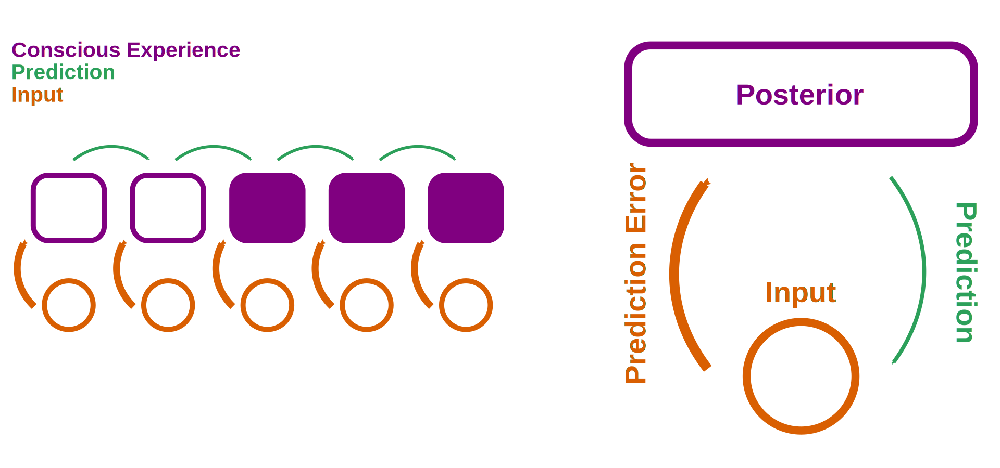
- A shift toward prediction errors may contribute to hallucinations.
- How do hallucinations persist?
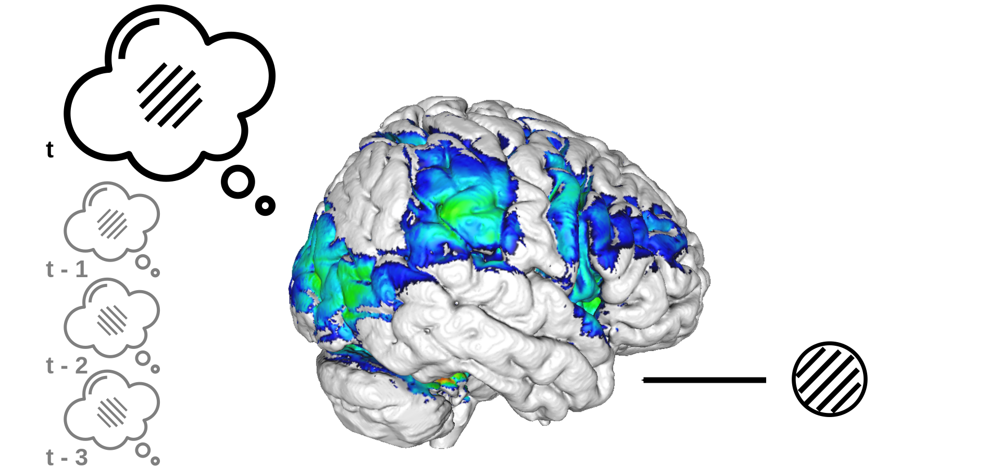
How does perception balance sensitivity to change with stability against noise?Graded Ambiguity

Serial Dependencies

- Stimulus- and history-congruence are autocorrelated.
Serial Dependencies

- Internally-biased processing suppresses stimulus sensitivity.
Perceptual Modes
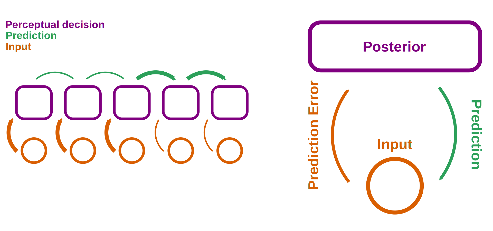
- Are between-mode fluctuations a general phenomenon in perceptual decision-making?
Confidence Database

- 4500 humans, 22 million choices
Confidence Database

- Quadratic relationship to RTs and confidence
IBL Database

- 165 mice, 1.5 million choices
Molecular correlates

- Shifting the balance between external and internal mode by blocking NMDA-receptors
Ketamine

Ketamine

Ketamine & Schizophrenia
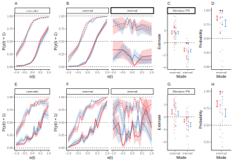
Outlook

- Modulating mode via TMS to treat hallucinations?
Next Questions
- Computational mechanisms and functions of between-mode fluctuations
- Neural correlates of internal and external modes
- The role of neuromodulators in between-mode fluctuations
- Internally-biased processing and hallucinatory experiences
Behavior

- Cross-species experiment in humans and mice based on the IBL paradigm
- Correlation to psychosis-proneness in humans
Mechanisms

- Leaky accumulation of evidence + fluctuating weights
- Alternatives: GLM-HMM | Bayes DDM | Hierarchical Gaussian Filter
Functions
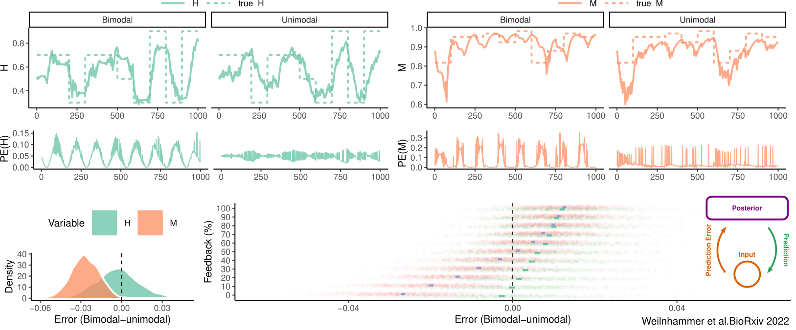
In the absence of feedback, between-mode fluctuations may improve inferences about:- (H): the hazard rate of the environment
- (M): the reliability of stimulus encoding
Neural Correlates

- Feature-selective regions in visual cortex
- Anterior insula | inferior frontal gyrus
Neuromodulators
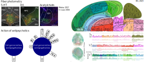
Mode ~ Activity of neuromodulatory inputs to cortical processing- 5-HT | DA | mAch as prediction-error signals
- 5-HT2A↑ | DA↑ | mACh↓ increase hallucination-proneness
Hallucinatory experiences
External-to-internal-switches as an endophenotype of hallucination-proneness- Internal mode processing ~ PDI / CAPS
- Internal mode processing ~ psychotomimetic interventions
Summary

Thanks a lot for your attention!
Literature
Weilnhammer, Stuke, Hesselmann, Sterzer, Schmack. A Predictive Coding Account of Bistable Perception. PLOS Computational Biology 2017.
Weilnhammer, Lukas, Eckert, Stuke, Heinz, Sterzer. Psychotic Experiences in Schizophrenia and Sensitivity to Sensory Evidence. Schizophrenia Bulletin 2020.
Weilnhammer, Fritsch, Chikermane, Eckert, Kathak, Stuke, Sterzer. An Active Role of Inferior Frontal Cortex in Conscious Experience. Current Biology 2021.
Weilnhammer, Chikermane, Sterzer. Bistable perception alternates between internal and external modes of sensory processing. iScience 2021.
Weilnhammer, Stuke, Standvoß, Sterzer. Bimodal inference in humans and mice. BioRxiv 2022.